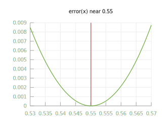
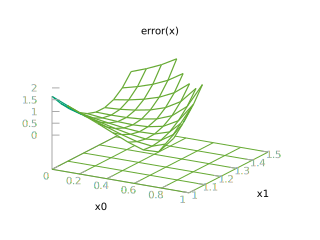

Gradient Descent 梯度下降法
梯度下降法可以帮助我们找到某个函数的极小值或者最小值。
对于一般问题，梯度下降法的好处是不需要进行公式推导，这是许多工程师的福音。
对于高维(>1000维)问题，梯度下降法（以及其衍生方法）是最常用的一类优化方法。
本页演示代码都在这里。
例1 导数下降法 Derivative Descent
已知 x^3 + 2x + e^x - 3 = 0，求x。
这个题目实际上是要我们找到一个数x，使得等号左边的式子，尽量接近等号右边的零（如果相等最好）。
直接求解析解需要进行痛苦的数学推导，令很多人望而却步。
这时我们可以用导数下降法求数值解。下面以Python作演示。
首先我们编写一个函数，用于计算 x^3 + 2x + e^x - 3：
def problem(x):
e = 2.71828182845904590
return x**3 + 2*x + e**x - 3

我们称上面的函数为problem。我们的目的就是找到数x，令problem(x) = 0。
接着，我们设计误差函数error。error(x) 计算的是 problem(x) 与 0 的差的平方：
def error(x):
return (problem(x)-0)**2
error函数的图像，看上去像个碗一样，中间是凹的，两边翘起。这个碗的最低点，也就是 error(x) 的最小值，就是我们要寻找的点。
我们发现:
- 当x在最小值左边的时候，error函数的导数（斜率）是负的；
- 当x在最小值右边的时候，导数是正的；
- 当x在最小值附近的时候，导数接近0.
因此，如果我们在：
- 导数为负的时候增加x；
- 导数为正的时候减小x；
就可以逐渐让 x 到达 error 函数的最小值点，使得error(x) = 0，同时也就使得 problem(x) = 0。
为了实现上面的过程，我们可以先求 error 函数在 x 处的导数，然后将 x 减去这个导数。下面给出“导数下降”的过程：
def derivative_descent(x):
delta = 0.00000001
derivative = (error(x + delta) - error(x - delta)) / (delta * 2)
alpha = 0.01
x = x - derivative * alpha
return x
解释：
- derivative 是 error 在 x 处的导数，这里是用导数的定义求的。
- x = x - derivative 这就是“导数下降”名称的由来。通过不断地减去导数，x最终会到达函数的最低点。
- alpha 参数控制的是点 x 逆着导数下降的距离，alpha 越大，x 就会下降得越多。alpha 太小会导致下降缓慢，alpha 太大会导致 x 冲得太远，令函数无法收敛。
我们可以先给x设定一个初始值（比如x = 0），然后重复运行这个下降过程。
x = 0.0
for i in range(50):
x = derivative_descent(x)
print('x = {:6f}, problem(x) = {:6f}'.format(x,problem(x)))
结果：
x = 0.120000, problem(x) = -1.630775
x = 0.223414, problem(x) = -1.291683
x = 0.311250, problem(x) = -0.982215
x = 0.383065, problem(x) = -0.710885
x = 0.438614, problem(x) = -0.487835
x = 0.478886, problem(x) = -0.318127
x = 0.506260, problem(x) = -0.198652
x = 0.523852, problem(x) = -0.120019
x = 0.534682, problem(x) = -0.070872
x = 0.541152, problem(x) = -0.041236
x = 0.544943, problem(x) = -0.023775
x = 0.547138, problem(x) = -0.013634
x = 0.548399, problem(x) = -0.007794
x = 0.549121, problem(x) = -0.004447
x = 0.549534, problem(x) = -0.002535
x = 0.549769, problem(x) = -0.001444
x = 0.549903, problem(x) = -0.000822
x = 0.549979, problem(x) = -0.000468
x = 0.550023, problem(x) = -0.000267
x = 0.550047, problem(x) = -0.000152
x = 0.550062, problem(x) = -0.000086
x = 0.550070, problem(x) = -0.000049
x = 0.550074, problem(x) = -0.000028
x = 0.550077, problem(x) = -0.000016
x = 0.550078, problem(x) = -0.000009
x = 0.550079, problem(x) = -0.000005
x = 0.550080, problem(x) = -0.000003
x = 0.550080, problem(x) = -0.000002
x = 0.550080, problem(x) = -0.000001
x = 0.550080, problem(x) = -0.000001
x = 0.550080, problem(x) = -0.000000
x = 0.550080, problem(x) = -0.000000
...
可以看到，导数下降法很快就找到了 x = 0.550080，使得 error(x) = 0，进而使得 problem(x) 也等于 0。如果运行的步数足够多，可以得到非常高精度的x。
最重要的是，在这个过程中我们不需要推导任何数学公式。
如果原函数很容易计算，我们可以向上面那样用定义法求导数，即 f'(x) = (f(x+d)-f(x-d)) / 2d .
如果计算原函数很困难，但原函数的导数很好计算，那么我们也可以用解析法求导数，然后应用导数下降法。
例2 梯度下降法 Gradient Descent
上面我们介绍的导数下降法，可以求一元函数 error(x) 的最小值。如果待求函数是多元函数呢？
已知 x0^5 + e^x1 + x0^3 + x0 + x1 - 5 = 0, 求 x0和x1.
首先定义problem(x)，其中x是2维矢量（即x0和x1）。下面用x[0]代表x0，x[1]代表x1.
def problem(x):
e = 2.71828182845904590
return x[0]**5 + e**x[1] + x[0]**3 + x[0] + x[1] - 5
def error(x):
return (problem(x)-0)**2
图中可以看到，由于x是2维矢量，problem(x)形成了一个曲面。
下图的error函数则是一个2维的山谷，谷底是最低点，那里是函数的解。利用梯度下降法，我们可以让x逐渐靠近谷底。
下面是“梯度下降”的过程：
def gradient_descent(x):
delta = 0.00000001
derivative_x0 = (error([x[0] + delta, x[1]]) - error([x[0] - delta, x[1]])) / (delta * 2)
derivative_x1 = (error([x[0], x[1] + delta]) - error([x[0], x[1] - delta])) / (delta * 2)
alpha = 0.01
x[0] = x[0] - derivative_x0 * alpha
x[1] = x[1] - derivative_x1 * alpha
return [x[0],x[1]]
因为待求变量有两个，因此这里的导数也有两个，分别是error对x0的偏导数和error对x1的偏导数。什么是偏导数？举个例子，error对x0的偏导数，就是当其他变量(比如x1, x2, x3...)保持不变的时候，x0对error的导数。
除此之外，梯度下降法和导数下降法的过程是完全一样的。
我们给x设定一个初始值，并重复运行这个梯度下降过程：
x = [0.0, 0.0]
for i in range(50):
x = gradient_descent(x)
print('x = {:6f},{:6f}, problem(x) = {:6f}'.format(x[0],x[1],problem(x)))
结果：
x = 0.080000, 0.160000, problem(x) = -3.585974
x = 0.153111, 0.315883, problem(x) = -3.155862
x = 0.220841, 0.465564, problem(x) = -2.709388
x = 0.283601, 0.606068, problem(x) = -2.252478
x = 0.340978, 0.733703, problem(x) = -1.798288
x = 0.391919, 0.844577, problem(x) = -1.367064
x = 0.435085, 0.935541, problem(x) = -0.982829
x = 0.469426, 1.005295, problem(x) = -0.666329
x = 0.494799, 1.055039, problem(x) = -0.427279
x = 0.512182, 1.088128, problem(x) = -0.261371
x = 0.523322, 1.108874, problem(x) = -0.154290
x = 0.530100, 1.121313, problem(x) = -0.088886
x = 0.534078, 1.128546, problem(x) = -0.050422
x = 0.536360, 1.132672, problem(x) = -0.028339
x = 0.537650, 1.134998, problem(x) = -0.015841
x = 0.538374, 1.136300, problem(x) = -0.008828
x = 0.538779, 1.137027, problem(x) = -0.004911
x = 0.539004, 1.137431, problem(x) = -0.002729
x = 0.539129, 1.137656, problem(x) = -0.001516
x = 0.539199, 1.137781, problem(x) = -0.000842
x = 0.539237, 1.137850, problem(x) = -0.000467
x = 0.539259, 1.137889, problem(x) = -0.000259
x = 0.539271, 1.137910, problem(x) = -0.000144
x = 0.539277, 1.137922, problem(x) = -0.000080
x = 0.539281, 1.137929, problem(x) = -0.000044
x = 0.539283, 1.137932, problem(x) = -0.000025
x = 0.539284, 1.137934, problem(x) = -0.000014
x = 0.539285, 1.137936, problem(x) = -0.000008
x = 0.539285, 1.137936, problem(x) = -0.000004
x = 0.539285, 1.137937, problem(x) = -0.000002
x = 0.539285, 1.137937, problem(x) = -0.000001
x = 0.539285, 1.137937, problem(x) = -0.000001
x = 0.539285, 1.137937, problem(x) = -0.000000
x = 0.539285, 1.137937, problem(x) = -0.000000
可以看到，这次我们也成功求解。
什么是梯度？
一元函数f(x)在点x处的导数，称为f对x的导数；
而N元函数f(x0,x1,x2...xn)在点x = [x0,x1,x2...xn] 处，共有N个偏导数，分别是f在该点对x0的偏导数，对x1的偏导数……
把这N个偏导数，组合成一个N维矢量，称为函数f在点x处的梯度。
在教科书中，梯度一般记为倒三角，因此梯度下降法通常这么写：
θ := θ - α∇θ
在python中，如果使用numpy库，把梯度作为矢量进行运算，之前的代码可以简写为：
x = x - gradient * alpha
例3 numpy库梯度下降法
已知 x0 * x1 + x0 * x2^2 + x1 + x1^3 + x2 + x2^5 + x3 + x3^7 - 15 = 0, 求 x0, x1, x2和x3.
numpy是Python最重要的函数库之一。
有了numpy库，我们就可以用简洁的代码（用一个矢量代表多个变量）实现梯度下降法。
import numpy as np
def problem(x):
return x[0]*x[1] + x[0]*(x[2]**2) + x[1] + x[1]**3 + x[2] + x[2]**5 + x[3] + x[3]**7 - 15
def error(x):
return (problem(x)-0)**2
def gradient_descent(x):
delta = 0.00000001
gradient = np.zeros(x.shape)
for i in range(len(gradient)):
deltavector = np.zeros(x.shape)
deltavector[i] = delta
gradient[i] = (error(x+deltavector)-error(x-deltavector)) / (delta*2)
alpha = 0.001
x = x - gradient * alpha
return x
x = np.array([0.0, 0.0, 0.0, 0.0])
for i in range(50):
x = gradient_descent(x)
print('x = {}, problem(x) = {:6f}'.format(x,problem(x)))
结果：
x = [ 0. 0.03 0.03 0.03], problem(x) = -14.909973
x = [ 0.00092144 0.05990046 0.05982007 0.05981995], problem(x) = -14.820185
x = [ 0.00280297 0.0898872 0.08946561 0.08946033], problem(x) = -14.730180
x = [ 0.00568689 0.12014423 0.11895018 0.11892079], problem(x) = -14.639463
x = [ 0.00961885 0.15085755 0.14829803 0.1482003 ], problem(x) = -14.547475
x = [ 0.01464791 0.18221879 0.17754634 0.17729741], problem(x) = -14.453574
x = [ 0.02082657 0.21442884 0.20674747 0.20621084], problem(x) = -14.357004
x = [ 0.02821105 0.24770165 0.23597107 0.2349403 ], problem(x) = -14.256859
x = [ 0.03686166 0.28226825 0.26530645 0.26348758], problem(x) = -14.152046
x = [ 0.04684326 0.31838109 0.2948653 0.29185797], problem(x) = -14.041226
x = [ 0.05822582 0.35631888 0.32478498 0.32006192], problem(x) = -13.922748
x = [ 0.07108499 0.39639176 0.35523285 0.34811695], problem(x) = -13.794551
x = [ 0.08550256 0.43894696 0.38641194 0.37604976], problem(x) = -13.654041
x = [ 0.10156685 0.48437466 0.41856863 0.40389843], problem(x) = -13.497923
x = [ 0.11937261 0.53311359 0.45200298 0.43171468], problem(x) = -13.321963
x = [ 0.13902038 0.58565548 0.4870829 0.45956607], problem(x) = -13.120673
x = [ 0.16061453 0.64254666 0.52426338 0.48753792], problem(x) = -12.886867
x = [ 0.18425932 0.70438334 0.56411284 0.5157345 ], problem(x) = -12.611030
x = [ 0.21005156 0.77179502 0.60734891 0.54427884], problem(x) = -12.280455
x = [ 0.2380674 0.8454054 0.65488617 0.57330938], problem(x) = -11.878001
x = [ 0.26833923 0.92575291 0.70789738 0.60297019], problem(x) = -11.380361
x = [ 0.30081586 1.01314031 0.76788356 0.63338792], problem(x) = -10.755628
x = [ 0.33529379 1.10736339 0.83672797 0.66462178], problem(x) = -9.959930
x = [ 0.37129848 1.20724266 0.91664437 0.69655962], problem(x) = -8.933138
x = [ 0.40787932 1.30985946 1.00973995 0.72871095], problem(x) = -7.595421
x = [ 0.44326538 1.40943656 1.11640043 0.75982431], problem(x) = -5.856840
x = [ 0.47437442 1.49615059 1.23068688 0.78731666], problem(x) = -3.697850
x = [ 0.49664095 1.55671969 1.33154595 0.80704267], problem(x) = -1.469685
x = [ 0.50642827 1.58248846 1.38457365 0.81566705], problem(x) = -0.153432
x = [ 0.50750215 1.58525614 1.39094956 0.8166065 ], problem(x) = 0.011811
x = [ 0.507419 1.58504244 1.39045048 0.81653385], problem(x) = -0.001176
x = [ 0.50742727 1.58506371 1.3905001 0.81654108], problem(x) = 0.000115
x = [ 0.50742646 1.58506163 1.39049525 0.81654037], problem(x) = -0.000011
x = [ 0.50742654 1.58506184 1.39049573 0.81654044], problem(x) = 0.000001
x = [ 0.50742654 1.58506182 1.39049568 0.81654043], problem(x) = -0.000000
x = [ 0.50742654 1.58506182 1.39049568 0.81654043], problem(x) = 0.000000